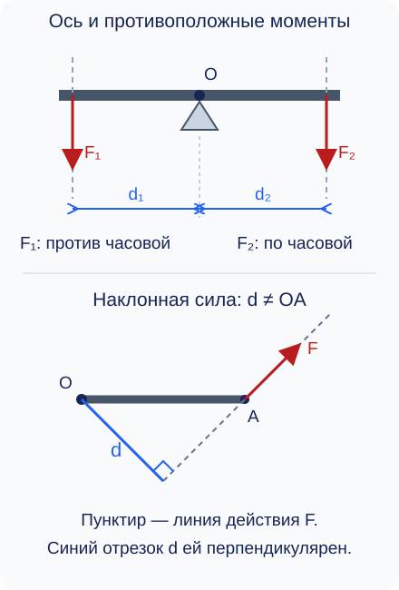
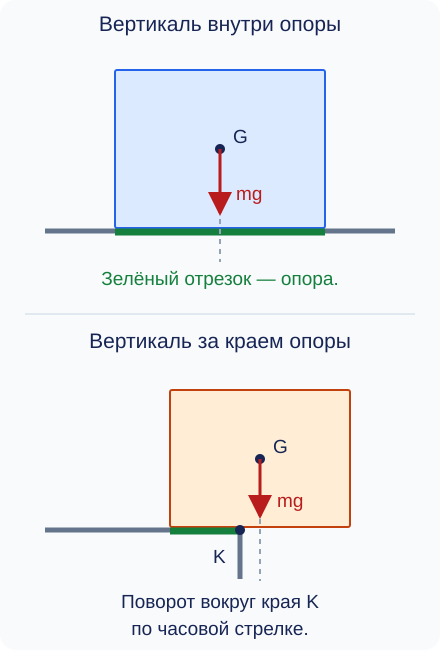

Равновесие тел. Момент силы. Центр тяжести
Книга спокойно лежит на столе, хотя Земля притягивает её вниз. Дверь легче открыть, толкая около ручки, чем около петель. Широкий шкаф труднее опрокинуть, чем узкую высокую стойку. Эти ситуации связаны с равновесием, но для их объяснения нужно учитывать не только величину и направление сил, но и место их приложения.
Равновесие материальной точки
В модели материальной точки размерами тела пренебрегают. Такая модель позволяет описать движение тела в целом, но не его поворот. Например, для расчёта сил, удерживающих небольшой груз на вертикальной нити, его размеры могут быть несущественны.
Силы складываются как векторы. Две силы компенсируют друг друга, когда равны по модулю и направлены противоположно. При этом обе силы должны действовать на одно рассматриваемое тело. Силы взаимодействия двух разных тел из третьего закона Ньютона не уравновешивают друг друга на одном из них.
В задачах этой статьи систему отсчёта, связанную с Землёй, приближённо считаем инерциальной. Связь между компенсацией сил и сохранением скорости рассмотрена в теме о первом законе Ньютона.
Пример 1. Груз на нити
Какое натяжение удерживает груз?
Груз массой 0,6 кг неподвижно висит на вертикальной нити. Считаем его материальной точкой, сопротивлением воздуха пренебрегаем. Примем \(g=10\ \text{Н/кг}\).
На груз действуют две силы: сила тяжести \(F_{\text{тяж}}=mg\) вниз и сила натяжения нити \(T\) вверх. Поскольку груз покоится, силы компенсируются:
Сила натяжения равна 6 Н. Это сила, с которой нить действует на груз; силу, с которой груз тянет нить, при составлении условий равновесия самого груза не добавляют.
Зачем учитывать размеры тела
При открывании двери важны расстояние от петель до ручки и направление толчка. Модель материальной точки этого не передаёт. Нужна модель тела, у которого есть размеры и которое может поворачиваться.
Закреплённая ось не позволяет телу перемещаться целиком, но допускает вращение вокруг неё. Так вращаются дверь на петлях и рычаг на опоре. Две равные противоположные силы, приложенные к разным частям тела, могут вызывать поворот даже при нулевой равнодействующей. Поэтому для равновесия протяжённого тела одного условия компенсации сил недостаточно.
Плечо силы
Прямая, вдоль которой направлен вектор силы, называется линией действия силы. Для вращения важно кратчайшее расстояние от оси до этой прямой. В рисунках рассматриваем силы, действующие в плоскости, перпендикулярной оси вращения; сама ось изображается точкой \(O\).

На верхней части схемы силы направлены вниз, но действуют по разные стороны оси: левая стремится повернуть рычаг против часовой стрелки, правая — по часовой. На нижней части видно, почему нельзя всегда считать плечом длину рычага. Если линия действия силы проходит через ось, плечо равно нулю: такая сила не вызывает поворота вокруг этой оси.
Момент силы
Поворотное действие силы зависит одновременно от силы и её плеча. Одинаковая сила даёт большее поворотное действие при большем плече. Поэтому дверь удобно толкать около ручки и перпендикулярно её плоскости.
Момент силы описывает вращательное действие. Хотя произведение Н·м встречается и в единицах работы, момент силы — другая величина; в этих задачах его единицу записывают как Н·м, а не называют джоулем.
Равновесие тела с закреплённой осью
Если несколько сил стремятся вращать тело в одну сторону, их моменты складываются. Для равновесия эти действия должны компенсироваться моментами сил, стремящихся вращать тело в другую сторону.
Предполагаем, что ось допускает свободное вращение, а трением в ней пренебрегаем. Реакция оси — сила со стороны крепления — удерживает тело от перемещения. Её линия действия проходит через ось, поэтому момент этой силы относительно оси равен нулю. Остальные силы, включая силу тяжести, нужно учитывать, если их плечи не равны нулю.
У свободного тела, которое не закреплено на оси, для сохранения покоя нужно обеспечить и компенсацию всех сил, и компенсацию их вращательных действий. Закрепление оси не отменяет действия сил: часть задачи по их компенсации выполняет опора.
Пример 2. Рычаг на оси
Какой силы достаточно для равновесия?
Невесомый горизонтальный рычаг закреплён на оси \(O\). Слева на расстоянии 20 см от оси действует направленная вниз сила \(F_1=30\ \text{Н}\). Справа вниз действует сила \(F_2\) с плечом 50 см. Рычаг первоначально покоится. Найдём \(F_2\), при которой он останется в равновесии. Трением в оси пренебрегаем.
Обе силы перпендикулярны рычагу, поэтому указанные расстояния являются плечами. Переведём их в метры:
Левая сила вращает рычаг против часовой стрелки, правая — по часовой. По правилу моментов:
Проверка: \(30\cdot0{,}20=12\cdot0{,}50=6\ \text{Н}\cdot\text{м}\). Меньшая сила уравновешивает большую за счёт большего плеча. Вверх на рычаг действует реакция оси; она компенсирует две направленные вниз силы и не создаёт момента относительно \(O\).
Центр тяжести
Сила тяжести действует на каждую часть тела. Для небольших тел у поверхности Земли эти силы можно считать параллельными, направленными вертикально вниз. Их общее действие удобно заменить одной силой.
У однородного тела с симметричной формой центр тяжести совпадает с центром симметрии: у шара — с его центром, у прямоугольной пластины — с пересечением диагоналей. Если масса распределена неравномерно, центр тяжести смещён к более массивной части. Он может находиться и вне материала тела, например в центре однородного кольца.
Для плоского тела произвольной формы используют свойство подвеса. Когда свободно подвешенное тело успокоилось, его центр тяжести находится на вертикали под точкой подвеса: иначе сила тяжести создавала бы поворачивающий момент. На чертеже отмечают такую вертикаль для одного положения подвеса, затем для другого. Точка их пересечения указывает центр тяжести плоского тела. Это описание способа определения, а не предположение, что центр всегда находится в геометрическом центре любого предмета.
Центр тяжести и площадь опоры
Стоящее тело опирается на поверхность не обязательно всем своим нижним контуром. Площадь опоры — область, ограниченная внешними точками контакта с опорой; в неё входят и промежутки между контактами. Например, у стола на четырёх ножках это область между ножками, а не сумма площадей четырёх маленьких подошв.

Для равновесия также нужно, чтобы опора выдерживала тело и оно не скользило. При дополнительных силах, например при толчке рукой, нужно учитывать и их действие; одной проверки вертикали силы тяжести тогда недостаточно.
При прочих равных более широкая опора и более низкое положение центра тяжести повышают устойчивость к опрокидыванию: тело можно сильнее наклонить, прежде чем вертикаль выйдет за границу опоры. Поэтому тяжёлые предметы обычно размещают ниже, а при переноске высокой вещи учитывают возможность смещения центра тяжести.
Главное в теме
Равновесие материальной точки связано с нулевой равнодействующей сил. Для протяжённого тела существенны также точки приложения сил и их моменты. Плечо — перпендикуляр к линии действия силы, момент по модулю равен \(Fd\). Тело с закреплённой осью, первоначально находившееся в покое, сохраняет его при компенсации противоположных моментов. Центр тяжести помогает определить действие силы тяжести и возможность опрокидывания.
Проверь понимание
Вопросы для самопроверки
- Почему нулевая равнодействующая не обязательно означает покой? - Почему материальная точка не подходит для объяснения открывания двери? - Как построить плечо силы, направленной наклонно к рычагу? - Может ли ненулевая сила иметь нулевой момент относительно выбранной оси? - Почему в условии равновесия рычага нельзя забывать о силе тяжести самого рычага? - Как определить центр тяжести однородной прямоугольной пластины и плоского тела без симметрии? - Почему один и тот же предмет легче опрокинуть при более узкой опоре?
Задачи для самостоятельной работы
В задачах 1–4 тела первоначально покоятся. Там, где нужна сила тяжести, принимай \(g=10\ \text{Н/кг}\). В задачах о рычаге трением в оси пренебрегай. Записывай формулу и вычисления с единицами. Если по условию можно определить направление поворотного действия силы, указывай и его.
- На вертикальной нити неподвижно висит груз массой 1,5 кг. Изобрази силы, действующие на груз, и найди силу натяжения нити. Груз считай материальной точкой, сопротивлением воздуха пренебреги.
- К телу с закреплённой осью приложена сила 18 Н. Её плечо равно 25 см. Найди модуль момента силы. Чему он станет равен, если при той же силе плечо уменьшится в три раза?
- К невесомому горизонтальному рычагу по разные стороны оси приложены две вертикальные силы вниз. Слева действует сила 40 Н с плечом 15 см, справа — неизвестная сила с плечом 60 см. Определи правую силу для равновесия и сравни направления моментов.
- Сила 12 Н приложена к точке \(A\) рычага. Расстояние \(OA\) равно 50 см, а перпендикуляр от оси \(O\) к линии действия силы — 30 см. Найди модуль момента. Объясни, почему одно из данных расстояний не используется как плечо. Как изменится момент, если направить силу вдоль прямой \(OA\)?
- На боковом чертеже горизонтальная опора занимает отрезок от 0 до 40 см. Вертикаль центра тяжести первого тела пересекает плоскость опоры на отметке 25 см, второго — на отметке 45 см. На тела действуют только сила тяжести и опора, скольжения нет. Для каждого тела определи, возможно ли равновесие без опрокидывания. Изобрази центр тяжести, силу тяжести и границы опоры; для опрокидывающегося тела укажи край поворота.
Задача «Почему лестница не падает»
Лестница стоит на полу и опирается верхним концом на стену. Почему она может сохранять равновесие, хотя сила тяжести стремится её опрокинуть? Разберёмся с помощью рисунка сил и правила моментов.
Условие задачи
Однородная лестница длиной \(5\ \text{м}\) и массой \(12\ \text{кг}\) опирается на вертикальную гладкую стену. Её нижний конец находится на горизонтальном шероховатом полу, на расстоянии \(3\ \text{м}\) от стены. Людей и других грузов на лестнице нет. Примите \(g=10\ \text{Н/кг}\).
Обозначьте нижний конец лестницы буквой \(A\), верхний — \(B\), а её центр тяжести — \(C\). Считайте лестницу абсолютно твёрдым телом. Сначала предположите, что она находится в покое; затем проверьте, достаточно ли трения для этого.
Задания
1. Изобразите силы
Нарисуйте стену, пол и лестницу. Отметьте точки \(A\), \(B\), \(C\) и известные расстояния. Покажите все силы, действующие на лестницу:
- силу тяжести;
- силу реакции стены;
- силу нормальной реакции пола;
- силу трения со стороны пола.
Подпишите силы и самостоятельно определите их направления. Объясните, в какую сторону начал бы двигаться нижний конец лестницы, если бы пол стал гладким.
2. Покажите моменты сил
Рассматривайте моменты относительно оси, проходящей через \(A\) перпендикулярно плоскости рисунка. Выбор этой оси для расчёта не означает, что нижний конец лестницы закреплён шарниром.
Продолжите линии действия сил и проведите к ним перпендикуляры из точки \(A\). Обозначьте плечи. Для сил с ненулевыми моментами дуговыми стрелками около \(A\) покажите, в какую сторону каждая сила стремится повернуть лестницу: по часовой стрелке или против неё. Подпишите соответствующие моменты.
Укажите, какие силы имеют нулевой момент относительно выбранной оси, и объясните почему.
3. Найдите плечи и силу реакции стены
Вычислите высоту точки \(B\) над полом и определите плечи силы тяжести и силы реакции стены относительно \(A\).
Запишите условие равновесия моментов и найдите модуль силы реакции стены. Ответ дайте в ньютонах.
4. Найдите силы со стороны пола
Запишите условия равновесия сил отдельно по горизонтали и по вертикали. Найдите силу нормальной реакции пола и силу трения, необходимую для равновесия лестницы.
5. Проверьте, достаточно ли трения
Коэффициент трения покоя между лестницей и полом равен \(\mu=0{,}40\). Рассчитайте наибольшую возможную силу трения покоя и сравните её с требуемой силой из предыдущего пункта. Может ли лестница оставаться в покое при заданных условиях? Обоснуйте ответ.
Дополнительно: найдите минимальный коэффициент трения, при котором равновесие ещё возможно.
Формулы для работы
Модуль момента силы:
где \(d\) — перпендикулярное расстояние от оси до линии действия силы. Для равновесия сумма моментов сил, вращающих тело по часовой стрелке, равна сумме моментов противоположного направления. Одновременно должна быть равна нулю равнодействующая всех сил.
Наибольшая сила трения покоя:
Здесь \(N\) — модуль нормальной реакции пола. Действительная сила трения покоя может быть меньше предельной; равенство \(F_{\text{тр}}=\mu N\) используют только на границе скольжения.
Что представить
Рисунок с силами, плечами и направлениями моментов; уравнение моментов; два условия равновесия сил; расчёты и собственный вывод о возможности равновесия лестницы.